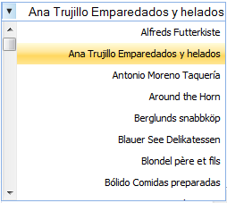

This feature supports to change the left-to-right alignment of the AutocompleteTextBox control to right-to-left (RTL). The custom template AutoComplete text box also supports RTL.
Use Case Scenarios
The AutocompleteTextBox control and its suggestion list support right-to-left alignment.
Properties
|
Property |
Description |
Type |
Data Type |
|
RightToLeft |
Aligns the AutoComplete text box in right-to-left. |
Server side |
Binary, true/false |
Sample Link
To view a sample:
1. Open the Essential Tools sample browser from the dashboard. (Refer to the Samples and Location chapter).
2. Navigate to Tools.MVC > AutoComplete Textbox > Right To Left.
Adding Highlight to an Application
Using AutocompleteTextBoxBuilder
To implement the right-to-left alignment by using AutocompleteTextBoxBuilder:
1. Create a view.
2. In the view, invoke the AutocompleteTextBox helper with the control ID.
3. Set RightToLeft to true.
|
[ASPX]
<%=Html.Syncfusion().AutocompleteTextBox("myAutocomplete").RequestMapper("GetData").RightToLeft(true) %>
|
|
[Razor] @Html.Syncfusion().AutocompleteTextBox("myAutocomplete").RequestMapper("GetData").RightToLeft(true)
|
|
Controller public ActionResult Index() { return View(); } [AcceptVerbs(HttpVerbs.Post)] public ActionResult GetData(string QueryString) { Northwind context = SqlCE; var dataSource = from suggestion in context.Customers select suggestion.CustomerID;
ActionResult jsonResult = dataSource.AutocompleteActionResult(); return jsonResult; } |
4. Build and run the application.

Figure 73: AutoComplete—Right-to-Left
Using AutocompleteTextBoxModel
To implement the right-to-left alignment by using AutocompleteTextBoxModel:
1. In the controller, create an object for the AutocompleteTextBoxModel class.
2. Set RightToLeft to true.
|
Controller public ActionResult Index() { AutocompleteTextBoxModel myModel = new AutocompleteTextBoxModel(); myModel.Render = true; myModel.RequestMapper = "GetData"; ViewData["myAutocomplete"] = myModel; return View(); }
[AcceptVerbs(HttpVerbs.Post)] public ActionResult GetData(string QueryString) { Northwind context = SqlCE; var dataSource = from suggestion in context.Customers select suggestion.CustomerID;
ActionResult jsonResult = dataSource.AutocompleteActionResult(); return jsonResult; }
|
3. Create a view.
4. In the view, invoke the AutocompleteTextBox helper with the control ID.
5. From the ViewData, assign the AutocompleteTextBoxModel class to the AutocompleteTextBox helper.
|
[ASPX]
<%=Html.Syncfusion().AutocompleteTextBox("myAutocomplete")%>
|
|
[Razor]
@Html.Syncfusion().AutocompleteTextBox("myAutocomplete")
|
6. Build and run the application.
Figure 74: AutoComplete—Right-to-Left